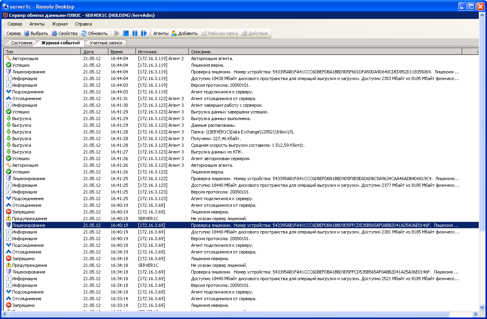
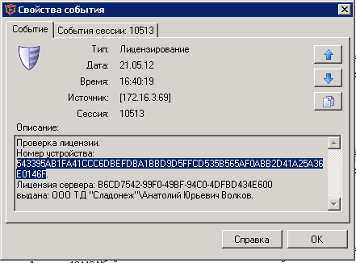
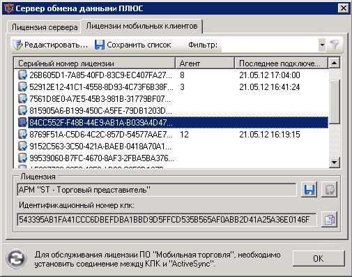
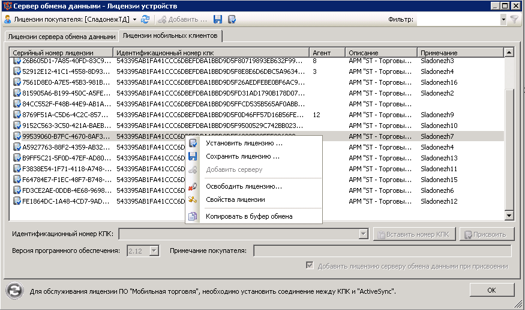
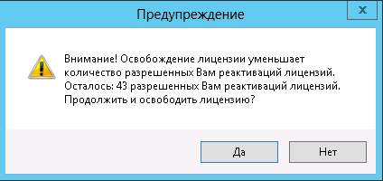

Подключить КПК для обмена, найти на СОД сообщение об ошибке и посмотреть серийный номер КПК. Скопировать номер.


Выбрать меню "Сервер" - "Лицензия". Перейти на закладку и нажать кнопку "Редактировать"

Находим по полю примечание нужный КПК, потом "Освободить лицензию". Затем зайти в нее же и ввести скопированый номер.

из переписки:
NeO (15:17:42 21/05/2012)
если вкратце - ставишь МТ на КПК, настраиваешь соединение, пытаешься подключиться - в соде показывается попытка подключения с ошибкой проверки лицензии, в этом же сообщении есть серийник КПК. Его копируешь, привязываешь к нужной лицензии и еще раз делаешь загрузку - КПК скачает файл лицензии сам и перезапустит МТ. Все
СладонежТД kRTRmAeJQj
